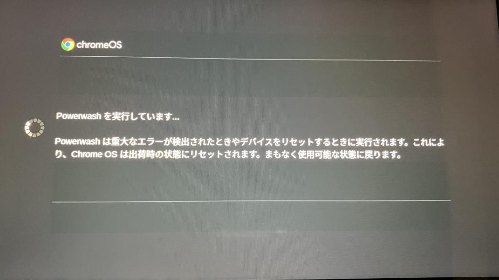
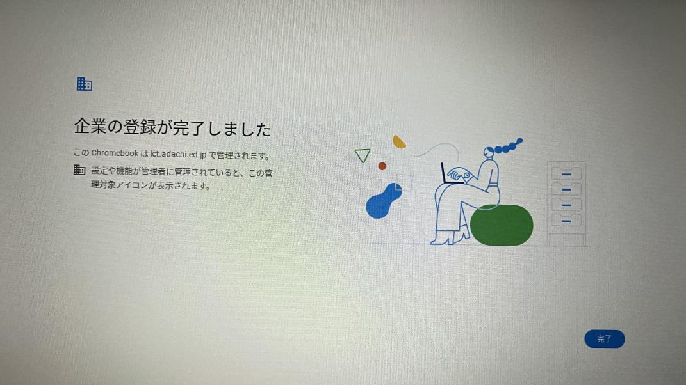

学校のPCでDiscord (チャットアプリ) を使う方法！！
こんにちは。今回はタイトルにもある通り、Discordを使う方法を見つけたので紹介します。
難しそうに見えるかもしれませんが簡単です！ 5分以内でできると思います。
使ったことがない人もこの機に始めてみてはどうでしょうか。
その前に今回、powerwashという操作が出てきます。powerwash絶対に家でやってください。フリじゃないです、WIFI接続できなくなって詰みます。
それでは紹介していきます
まずはログアウトをして最初のログイン画面に来てください。
そしたらCtrl+Alt+Shift+R キーを長押ししてください。
以下のような画面になったら再起動をクリックします。
顔が反射しててわざわざ最初からやり直して撮直しました。はいどうでもいいです
えー、再起動が終わるとこのような画面になるので「powerwash」をクリック
(一応もう一度言います、powerwashは家でやってください、絶対に！！フリじゃないです)

以下のような画面になったら少し待つと「始める」というボタンが出てくるので押してください。
企業の登録 となったら、自分のアカウントでログインします。
以下のような画面になったらOKです！
そのまま進めるといつものログイン画面になるのでログインしてください。
ここが重要です！！
ログインできた瞬間にwifiをオフにしてください！！
wifiがオフの状態で、 discord.com/loginとURLバーに入力しましょう。
打ち間違えたら最初からやり直しなのでしっかりと確認しましょう
そしたらwifiをオンにして、再読み込みを連打してください。(もちろんサイトが読み込んだら連打はやめてね)
これが開けたら成功です！！お疲れ様でした！！
ここでブロックされた人は失敗しています。最初からやり直すか死んでくださいｗ
ここで再読み込みしたらブロックされてしまうので絶対にしないように！
そしたらアカウントがある人はログイン、持ってない人は指示に従えば簡単に作れるので作りましょう。
(新しく作成した人はメールが来ているので認証しましょう、そうしないと使えない場合があるので。)
説明や使い方
Youtubeのほうがわかりやすいと思うので動画貼っときます。決して面倒だからではありません
Discordとは? 基本操作 その他最後に
どうだったでしょうか。後から読み直すと語彙力の無さに驚いて勃起してしまいました(?)
間違えて消しそうな人は新しいデスクでやるのもいいかもしれないです(今更)。
僕のIDは as_rain です。良かったら追加してくださいｗ
次回はLINEの使い方です、お楽しみに。
あ、質問等あったらLINEで対応します。